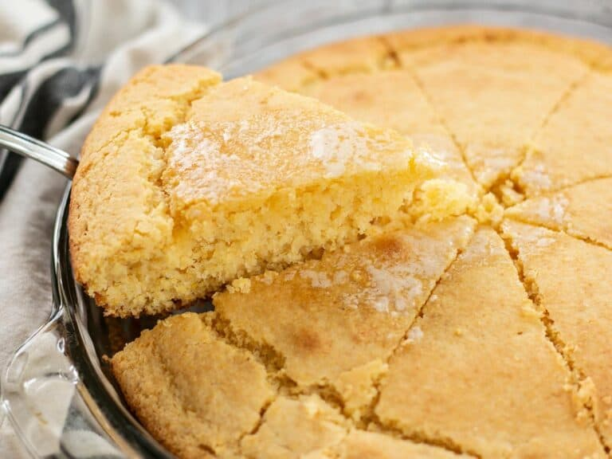

Cornbread

Cornbread recipe. Simple and tasty. Recipes from Budget Bytes Easy to overbake and come out dry.
Ingredients
- 1 cup all purpose flour
- 1 cup yellow cornmeal
- 1/2 tsp salt
- 1 large egg
- 1/4 cup sugar
- 1/4 cup vegetable oil
- 1 tbsp baking powder
- 1 cup milk
Cooking Instructions
- Preheat oven to 425 degrees. Grease 8x8 casserole dish.
- In a large bowl, stir together the cornmeal, flour, sugar, baking powder, and salt until evenly combined.
- In a separate bowl, whisk together the milk, egg, and oil.
- Pour the bowl of wet ingredients into the bowl of dry ingredients and stir just until everything is moist. Avoid over stirring. It’s okay if there are a few lumps.
- Pour the batter into the prepared dish and bake for about 20 minutes, or until the top and edges are golden brown. Cut into 8 pieces and serve.